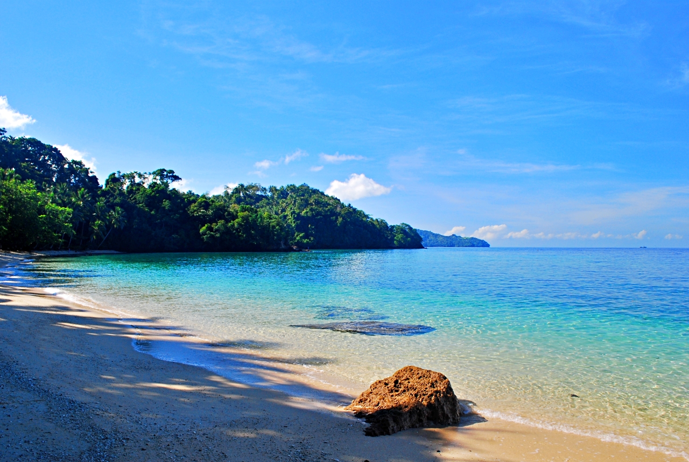

Kalamansig The White Sands

The province’s premier beach destination. Poral Beach and Balot Island offer crystal-clear turquoise waters and white sand that rival the most famous islands in the country. It is famous for its limestone rock formations.
Background: Named after a legendary giant or a sour fruit (Kalamansi), depending on which local you ask. It is the province's premier summer getaway.
The Vibe: Known for Poral Beach, it offers a "hidden paradise" feel with its limestone cliffs and crystal-clear waters that rival the more famous spots in the north.